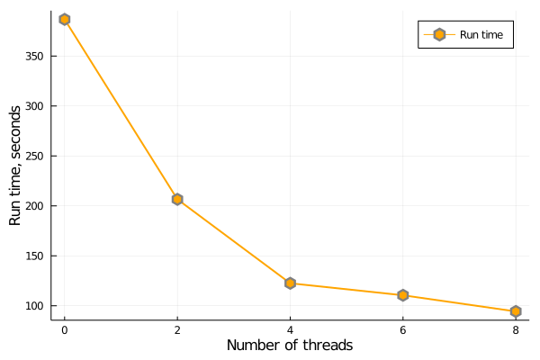

Parallel running Bellhop
We may see in previous examples that Bellhop is very efficient and fast! The answer for my question if we can run Bellhop faster several time is YES. We can run Bellhop parallel very simple in Julia with effortless. But why do we need to run Bellhop parallel? because in outdoor sound propagation modelling, we usually need to predict acoustic field (or transmission loss) at multiple frequencies (1/3-octave frequency) to estimate overall loss (or overall sound pressure level). This task is independent but it takes time. For this particular task, we can use Multi-Threading in Julia to run multiple tasks simultaneously.
Load package
using FreeRay, DelimitedFileselevation and sound speed data
elv = readdlm("./temp/elevation.txt")
ssp = readdlm("./temp/ssp.txt")Receiver
receiver = Receiver(
depth_point = 1001,
range_point = 10001,
depth = Vec2(-1000f0,0f0),
range = Vec2(0f0,10f0)
)Terrain
terrain = Terrain(
interp_type = "C",
profile = (Vec2(elv[:,1],elv[:,2]))
)Sound speed profile
sspl = Vec2(ssp[:,1],ssp[:,2])
ssp = SSP(sound_speed_profile= sspl)Frequency
For example, we want to run multiple frequencies centred at 3-octave bands simultaneously.
fcentre = 10.0 .^ (0.1 .* (12:43)) # octave frequency centre
fcentre = Float32.(fcentre) # convert to Float32Parallel running
In this simulation, frequency has only effect on the characteristic impedance. Thus, the value of Zc will be different for each frequency. For illustration purpose, we will use the same value Zc for all frequencies.
The difference in here is that we will use a loop function to launch several tasks at the same time. These tasks will be execute independently in each thread. To do so, we just need to use @threads macro as below code. My computer have 4 cores and 8 threads, thus I will test some options such as using 4, 6, 8 threads compared to not using macro @threads.
Threads.nthreads() = 8 # select numbers of threads
#@threads
@time @threads for i = 1: length(fcentre)
#println(i)
#a[i] = Threads.threadid()
frequency = fcentre[i]
# Point source 100 Hz at 80 m above ground level
source = Source(
frequency = frequency,
height = -80f0 + (-169f0) # 169 is ground level
)
### Boundary condition
Zc = 12.81 + 11.62im
Theta, Rmag, Rphase = R_coeff(Zc;len=100)
brc = Vec3(Theta,Rmag,Rphase)
trc = Vec3([0f0,45f0,90f0],[0f0,0f0,0f0],[0f0,0f0,0f0])
reflection = Reflection_Coeff(
top_coeff = trc,
bottom_coeff = brc
)
### Analysis
opt = Analysis(
filename = "Parallel_Bellhop_$i",
analyse = "CG",
option1 = "CFW",
option2 = "F*",
num_ray = 161,
alpha = Vec2(-80.0f0,80.0f0),
box = Vec2(10f0,1000.0f0),
step= 0
)
Environment(opt,source, receiver,ssp,terrain,reflection)
# Run Bellhop
fn= opt.filename
filename = "temp\\$fn"
run_bellhop = `bellhop $filename`
run(run_bellhop)
rmfile(filename)
end # end parallel